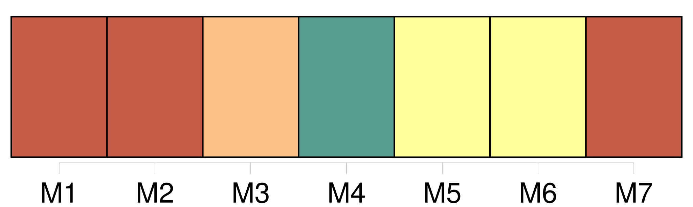

Longueur nb maillons : 25 mentions |
 |
Ces publications, et l'acte qui en sera dressé, énonceront les prénoms, noms, professions et domiciles, des futurs époux, leur qualité de majeurs ou de mineurs, et les prénoms, noms, professions et domiciles de [leurs pères et mères] [18 phrases] L'acte de notoriété contiendra la déclaration faite par sept témoins de l'un ou de l'autre sexe, parens ou non parens, des prénoms, nom, profession et domicile du futur époux, et de ceux de [ses père et mère] , s' [ils] sont connus ; le lieu, et, autant que possible, l'époque de sa naissance, et les causes qui empêchent d'en rapporter l'acte. [5 phrases]
L'acte authentique du consentement [dès pères et mères] ou aïeuls et aïeules, ou, à leur défaut, celui de la famille, contiendra les prénoms, noms, professions et domiciles du futur époux et de tous ceux qui auront concouru à l'acte, ainsi que leur degré de parenté. [10 phrases]
Les prénoms, noms, professions et domiciles [des pères et mères] ;
Le consentement [des pères et mères] , aïeuls et aïeules, et celui de la famille, dans les cas où ils sont requis ; [197 phrases]
Le fils qui n'a pas atteint l'âge de vingt-cinq ans accomplis, la fille qui n'a pas atteint l'âge de vingt-un ans accomplis, ne peuvent contracter mariage sans le consentement de [leurs père et mère] : en cas de dissentiment, le consentement du père suffit. [1 phrases]
Si l'un [des deux] est mort, ou s'il est dans l'impossibilité de manifester sa volonté, le consentement de l'autre suffit. [1 phrases]
Si [le père et la mère] sont morts, ou s' [ils] sont dans l'impossibilité de manifester [leur] volonté, les aïeuls et aïeules [les] remplacent : s'il y a dissentiment entre l'aïeul et l'aïeule de la même ligne, il suffit du consentement de l'aïeul. [2 phrases]
Les enfans de famille ayant atteint la majorité fixée par l'article 148, sont tenus, avant de contracter mariage, de demander, par un acte respectueux et formel, le conseil de [leur père et de leur mère] , ou celui de leurs aïeuls et aïeules, lorsque [leur père et leur mère] sont décédés, ou dans l'impossibilité de manifester [leur] volonté. [12 phrases]
Les officiers de l'état civil qui auraient procédé à la célébration des mariages contractés par des fils n'ayant pas atteint l'âge de vingt-cinq ans accomplis, ou par des filles n'ayant pas atteint l'âge de vingt-un ans accomplis, sans que le consentement [des pères et mères] , celui des aïeuls et aïeules, et celui de la famille, dans le cas où ils sont requis, soient énoncés dans l'acte de mariage, seront, à la diligence des parties intéressées et du commissaire du Gouvernement près le tribunal de première instance du lieu où le mariage aura été célébré, condamnés à l'amende portée par l'article 192, et, en outre, à un emprisonnement dont la durée ne pourra être moindre de six mois. [3 phrases]
Les dispositions contenues aux articles 148 et 149, et les dispositions des articles 151, 152, 153, 154 et 155, relatives à l'acte respectueux qui doit être fait [aux père et mère] dans le cas prévu par ces articles, sont applicables aux enfans naturels légalement reconnus. [1 phrases]
L'enfant naturel qui n'a point été reconnu, et celui qui après l'avoir été a perdu [ses père et mère] , ou dont [les père et mère] ne peuvent manifester [leur] volonté, ne pourra, avant l'âge de vingt-un ans révolus, se marier qu'après avoir obtenu le consentement d'un tuteur ad hoc qui lui sera nommé. [31 phrases]
Le père, et à défaut du père, la mère, et à défaut de [père et mère] , les aïeuls et aïeules, peuvent former opposition au mariage de [leurs] enfans et descendans, encore que ceux -ci aient vingt-cinq ans accomplis. [22 phrases]
Le mariage contracté sans le consentement [des père et mère] , des ascendans, ou du conseil de famille, dans les cas où ce consentement était nécessaire, ne peut être attaqué que par ceux dont le consentement était requis, ou par celui des deux époux qui avait besoin de ce consentement. [1 phrases] L'action en nullité ne peut plus être intentée ni par les époux, ni par [les parens] dont le consentement était requis, toutes les fois que le mariage a été approuvé expressément ou tacitement par ceux dont le consentement était nécessaire, ou lorsqu'il s'est écoulé une année sans réclamation de leur part, depuis qu'ils ont eu connaissance du mariage. [18 phrases]
Tout mariage qui n'a point été contracté publiquement, et qui n'a point été célébré devant l'officier public compétent, peut être attaqué par les époux eux-mêmes, par [les père et mère] , par les ascendans, et par tous ceux qui y ont un intérêt né et actuel, ainsi que par le ministère public. |
|
Il est possible de télécharger la ressource sur la page Ortolang |
Si vous avez des questions ou vous voyez des erreurs, merci d'envoyer un mail à silvia.federzoni89@gmail.com |